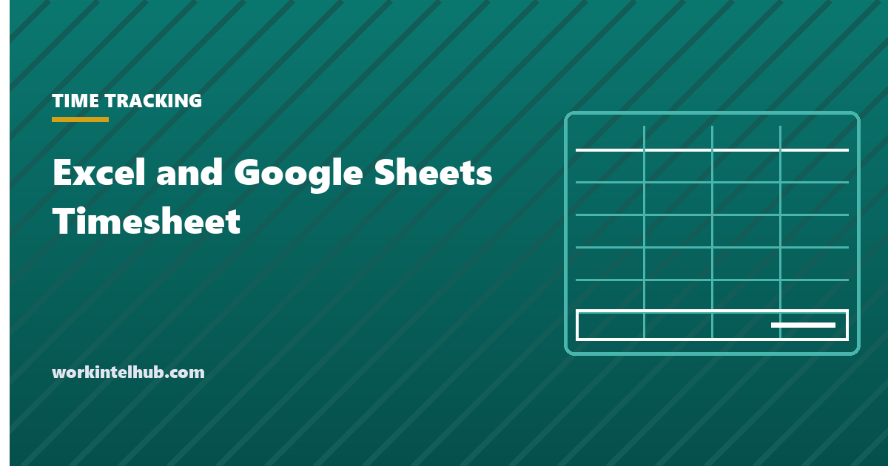

Excel and Google Sheets Timesheet

Most timesheet spreadsheets break in one of three places: a shift that crosses midnight, a cell formatted as time when it should be a number, and overtime worked out on the pay period instead of the week. All three are fixable in one sitting.
Below is the sheet layout, every formula for both Excel and Google Sheets, and the payroll rules that decide whether the numbers it produces are actually usable. That last part is what the spreadsheet tutorials leave out, and it is the part that costs money when it is wrong.
The sheet
Seven columns. Anything else belongs in payroll rather than on the sheet.
| Col | Field | Format | Notes |
|---|---|---|---|
| A | Date | Date | One row per day |
| B | Day | Text | =TEXT(A2,"ddd") |
| C | In | Time | 24-hour entry avoids AM/PM mistakes |
| D | Out | Time | |
| E | Break (min) | Number | Unpaid break only |
| F | Hours | Number, 2dp | The formula below |
| G | Notes | Text | Job, project or cost code |
Column F is the one people get wrong, and the reason is almost always formatting rather than arithmetic. More on that below.
The formulas, for both applications
These are identical in Excel and Google Sheets. Row 2 is the first day.
Standard shift: =ROUND((D2-C2)*24-E2/60, 2)
Handles midnight: =ROUND(MOD(D2-C2,1)*24-E2/60, 2)
Blank rows stay blank: =IF(OR(C2="",D2=""),"",ROUND(MOD(D2-C2,1)*24-E2/60,2))
Use the MOD version always. Subtracting two times gives a fraction of a day, so a
22:00 to 06:00 shift returns a negative number and the week silently under-reports.
MOD(D2-C2,1) wraps it around midnight and costs nothing on a normal shift.
Most tutorials reach for =IF(D2<C2, D2+1-C2, D2-C2) instead. It gives the same
answer, but it is longer, it breaks if someone types the times in the wrong order, and it has
to be repeated inside every formula that touches the shift. MOD does the same job
in one function.
Week total: =SUM(F2:F8)
Regular: =MIN(40, F9) Overtime: =MAX(0, F9-40)
Pay: =regular*rate + overtime*rate*1.5
Hours on one job: =SUMIF(G2:G40,"Job name",F2:F40)
The formatting trap
This is the single most common reason a timesheet produces a number that looks plausible and is wrong.
A time value in a spreadsheet is a fraction of a day. 7:30 is stored as 0.3125. Multiplying by 24 converts it to 7.5 decimal hours, which is what payroll wants. But if the result cell is still formatted as Time, the spreadsheet displays 7.5 as 12:00 and, worse, adding a column of them wraps around at 24 hours.
Fix it explicitly rather than relying on the default:
- Excel: select column F, Home → Number Format → Number, 2 decimal places.
- Google Sheets: select column F, Format → Number → Number.
- If a total exceeds 24 and you do want it shown as time, the custom format is
[h]:mm. The square brackets are what stop it wrapping.
A quick test: put 8 hours in seven rows and check the total reads 56.00 and not 08:00. If it reads 08:00 the column is still a time.
Rounding, and what the law actually allows
Spreadsheet tutorials cover rounding as a formatting preference. It is not. 29 CFR 785.48 permits recording start and stop times to the nearest 5 minutes, tenth of an hour or quarter hour, but only if the practice does not, over a period of time, fail to compensate employees for all the time they actually worked.
Two consequences follow. Rounding has to run both directions, so a rule that rounds arrivals up and departures down is a standing deduction rather than rounding. And it has to come out roughly even over time, which is a property of the practice rather than of any single entry.
Nearest quarter hour: =ROUND(F2*4,0)/4
Nearest tenth: =ROUND(F2*10,0)/10
Nearest 5 minutes: =ROUND(F2*12,0)/12
Note these all use ROUND, which goes both ways. FLOOR and
ROUNDDOWN only ever go one way and are the formulas that turn a rounding policy
into a wage claim.
The better answer in a spreadsheet is not to round at all. Rounding existed to make punch card totals tractable by hand, and a computer has no such constraint. Exact decimal to two places removes the question entirely.
Overtime is weekly, and in some states daily
Two errors, both common in homemade sheets.
Do not total the pay period. Overtime under the FLSA is calculated on each workweek separately. Fifty hours one week and thirty the next is ten hours of overtime, even though the fortnight totals eighty. A biweekly sheet needs two weekly subtotals, never one.
Daily overtime exists. Per the California Division of Labor Standards Enforcement, California pays time and a half over eight hours in a workday and double time over twelve, with a separate rule for the seventh consecutive day. Four ten hour days is forty hours for the week and eight hours of daily overtime, and a sheet that only tests the weekly total reports none of it. Alaska, Nevada and Colorado have their own daily thresholds.
Daily regular: =MIN(8, F2)
Daily time and a half: =MAX(0, MIN(F2,12)-8)
Daily double time: =MAX(0, F2-12)
Our timesheet template has the full weekly, biweekly and monthly layouts if you would rather start from a finished sheet.
Stop the sheet being broken by accident
A shared timesheet gets damaged by ordinary use, not malice. Four settings prevent most of it.
- Lock the formula cells. Google Sheets: Data → Protect sheets and ranges, leaving only C, D, E and G editable. Excel: unlock those columns, then Review → Protect Sheet.
- Validate the inputs. Data validation restricting C and D to times, and E to a number between 0 and 240, stops most bad entries at the point of typing.
- Flag the impossible. Conditional formatting on F where
=F2>16catches the missed AM/PM and the forgotten clock-out. - Freeze the header row so nobody types into it on a long sheet.
The 16 hour rule earns its place. Almost every genuinely wrong timesheet line is a shift recorded as far longer than anyone worked, and it is trivial to catch automatically and tedious to catch by eye.
What you have to keep
A spreadsheet is a legally acceptable timekeeping system. 29 CFR 516.2 lists the twelve records an employer must keep for each non-exempt employee and is explicit that no particular timekeeping system or format is required. Paper, spreadsheet and software all satisfy it.
What the format does not change is retention. Time records showing daily start and stop times must be kept at least two years under 29 CFR 516.6, and payroll records at least three. State law frequently requires longer.
Which raises the practical weakness of spreadsheets, and it is not the arithmetic. It is that a file gets overwritten, renamed, or lost with a laptop. If you are running timesheets in a spreadsheet, the retention plan is the part to decide deliberately: one file per pay period, never edited after approval, stored somewhere backed up.
When to stop
A spreadsheet works well up to roughly a dozen people on similar schedules. The failure past that is not the formulas, it is the collection: chasing submissions, reconciling versions, and discovering on payroll day that three sheets are missing.
The signals are specific. Someone spends more than an hour per period assembling sheets. Corrections arrive after payroll has run. You cannot answer how many hours went to a job without opening every file. Or you employ across state lines and the overtime rules have stopped being the same. Our page on timesheet automation covers what to move first, and timesheet reminders covers the chasing.
Key takeaways
- Use MOD(out-in,1)*24 for daily hours. It handles shifts crossing midnight in one function, where the usual IF approach needs repeating everywhere.
- Format the hours column as Number, not Time. A time-formatted total wraps at 24 hours and quietly produces wrong totals.
- Rounding must run both directions. ROUND is defensible, FLOOR and ROUNDDOWN are a standing deduction.
- Overtime is calculated per workweek, never per pay period, so a biweekly sheet needs two weekly subtotals.
- California, Alaska, Nevada and Colorado have daily overtime, which a weekly-only sheet reports as zero.
- Lock the formula cells and flag any day over 16 hours. That one rule catches most genuinely wrong lines.
- A spreadsheet is a lawful timekeeping system, but time records must still be kept two years and payroll three.
Frequently asked questions
How do I calculate hours worked in Excel or Google Sheets?
Subtract the in time from the out time, multiply by 24 for decimal hours, then subtract unpaid break minutes divided by 60. Wrap the subtraction in MOD so shifts crossing midnight do not go negative: =ROUND(MOD(D2-C2,1)*24-E2/60, 2). The formula is identical in both applications.
How do I handle a shift that crosses midnight?
Use MOD(out-in,1) rather than out-in. Times are stored as fractions of a day, so a 22:00 to 06:00 shift subtracts to a negative number and the weekly total silently under-reports. MOD wraps the value around midnight and has no effect on an ordinary shift.
Why does my timesheet show 12:00 instead of 7.5 hours?
The result cell is still formatted as Time. Multiplying by 24 produces a decimal number, but a time-formatted cell displays it as a clock value and totals wrap around at 24 hours. Set the column to Number with two decimals. If you do want time format on a total over 24 hours, use the custom format [h]:mm.
Is a spreadsheet timesheet legal?
Yes. 29 CFR 516.2 lists the records an employer must keep and states that no particular timekeeping system or form of record is required. The obligations that do not change are retention: time records for at least two years and payroll records for at least three, longer where state law requires it.
Can I round hours in my timesheet spreadsheet?
Within limits. 29 CFR 785.48 permits rounding to the nearest 5 minutes, tenth or quarter hour provided the practice does not over time fail to pay employees for hours actually worked. Use ROUND, which goes both directions. FLOOR and ROUNDDOWN only ever favour the employer and do not satisfy the rule.
How do I calculate overtime in a timesheet spreadsheet?
Per workweek, not per pay period: =MAX(0, weekly_total-40). A biweekly sheet needs two separate weekly subtotals, because fifty hours in one week and thirty in the next is ten hours of overtime even though the period totals eighty. In California and a few other states add daily overtime columns as well.
How do I stop people breaking the shared timesheet?
Protect the formula columns so only the in, out, break and notes cells are editable, add data validation restricting times and break minutes to sensible values, and use conditional formatting to flag any day over 16 hours. That last rule catches most genuinely wrong entries, which are almost always a missed clock-out.
Should I use Excel or Google Sheets for timesheets?
The formulas are identical, so it comes down to collection. Google Sheets is easier when several people submit into one file, because there is one live copy and an edit history. Excel is easier where the sheet must live on a locked-down machine or feed an existing payroll workbook.